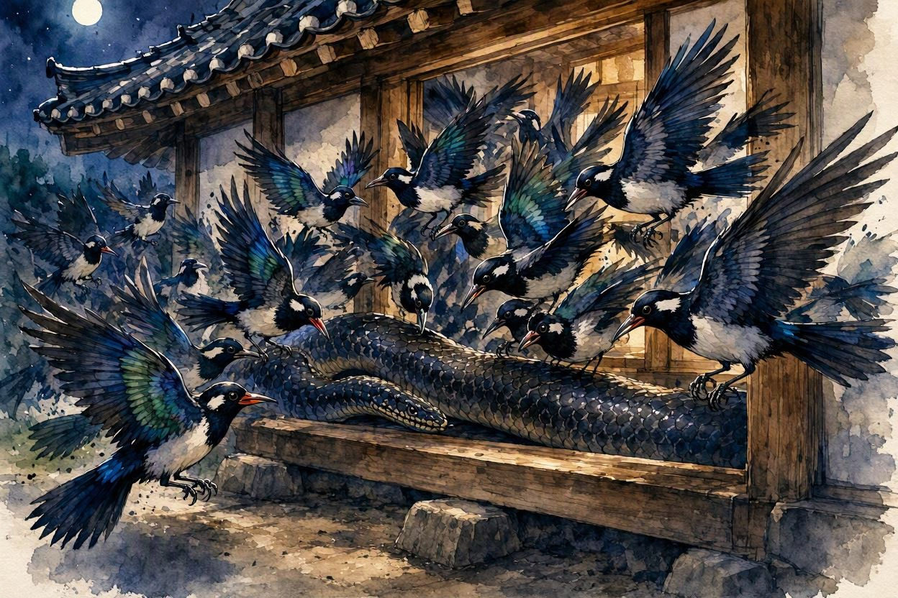

방정환 · 《어린이》 1925년
까치의 옷
2장. 아기를 지킨 까치 떼

올빼미는 깜짝 놀라서 이것 큰일 났다고 까치를 보고 자꾸 울었습니다.
올빼미의 울음소리를 들은 까치는 곧바로 위험을 알아차렸습니다. 까치는 크게 울어 동무들을 불렀고, 수많은 까치가 한꺼번에 날아와 구렁이를 쪼기 시작했습니다.
구렁이는 방문 앞까지 다가왔지만, 까치 떼의 공격을 이기지 못하고 결국 쓰러졌습니다. 얼마 뒤 돌아온 노파는 죽은 구렁이를 보고 깜짝 놀랐습니다.
“너희가 아니었다면 큰일 날 뻔했구나! 내일 꼭 좋은 옷을 지어 주마.”